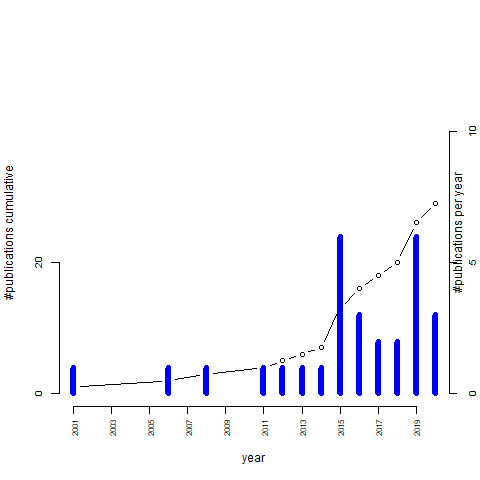
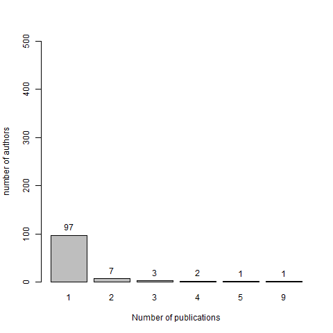

Use of digital displays for the measurement of stereo acuity
Welcome to the repository (first draft)
Here you can find the following resources:
Complete searchable list of publications
Publications by year
Publication list by authors in alphabetic order
Publication list by authors in order of number of publications
Publication list by type
Publication list by conference
Some graphs:
Publications per year

Number of publications per author
